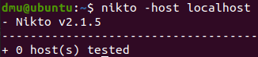

Nikto
Here is the URL to the offical Nikto GitHub page: https://github.com/sullo/nikto
Table of contents
1. General Info + Tool Purpose
Nikto is a web server scanner that does vulnerability scans against target, checking it for anything that can be exploited such as files or programs in places they shouldn’t be, outdated server versions etc. it can also look for things like configuration error. Upon finding something of interest it will output the results back to the terminal.
Nikto is considered to be one of the more popular web server scanning tools. One of the reasons is because its open source and up to date. Another reason is because it’s just a good tool – it’s easy to use and effective.
Nikto VS Nmap
The difference between nikto and nmap is nmap is used for port scanning and host identification. It just so happens
HTTP/websites are a port (and so it gets scanned). Nikto is made specifically to scan targets like HTTP/S, and
provides a much greater depth of information against the website. As websites are such a common target Nikto mostly
outshines Nmap in many areas concerning sites.
Nmap has something called NSE (Nmap scripting engine) in which
scripts can be used with the Nmap scan – I will not cover them in this guide, as
they can be quite advanced, but they help expand the abilities of Nmap).
As Nikto is a web server scanner it will primarily work against targets that work over the HTTP/S protocol (this does mean it only works against port 80 and 443!).
2. How to use the tool:
To Contents TableThe tool can be used by entering ‘nikto’ into the command line to run nikto 2.1.5.
nikto
If you wish to run nikto 2.1.6:
When in the command line, move to the dmu home directory (should automatically be in
this area when you launch the console), move into the nikto folder and then into the program folder, and once in use
perl to run nikto.pl.
cd /home/dmu/nikto/program | perl nikto.pl
If you wish to run commands in nikto 2.1.6 you will need to always specify ‘perl nikto.pl’ and then add the arguments afterwards.
You may notice also the output of ‘perl nikto.pl’ is different to just ‘nikto’ – this is because the former runs the full
help text as well, in order to get the same output for nikto 2.1.5 enter ‘nikto -H’.
For this guide I will be using nikto 2.1.5 as it has little difference to 2.1.6, and its much easier to run (don’t
need to move into nikto/program directory every time or add perl and .pl to the end of nikto).
If you wish to see examples of the Nikto command, click here. This will take you to an example of using Nmap and Nikto together.
3. Arguments:
To Contents Table
Just like nmap, if nikto is ran with no arguments it just spits back out the help page, so if you want it to run you need
to use arguments!
However, also unlike nmap, if you wish to scan a IP address you must enter the -host argument to run
before the IP (compared to nmap where you could just enter the ip address and the program would identify it as the IP address).
3.1 Core Arguments:
To Contents TableThese are the arguments you should know when using nikto. Normally these would be ‘enough’ to scan a target (would give adequate information).
-host - the -host argument is quite self-explanatory, it tells the nikto program what the target
IP address is.
If this argument is missing then the command would fail (even if the IP address is included without this
argument).
nikto -host 127.0.0.1
Have a go yourself!
NB entering localhost in place of the IP address (using localhost instead of 127.0.0.1) does not work

-ssl this argument is used if the target has SSL enabled (in otherwords, the host is running on port
443/HTTPS). This argument makes it so you also scan the targets SSL certificate for additional information.
In this guide I have not included any HTTPS targets, however if a target does not setup SSL properly
it can introduce additional vulnerabilities (despite the fact HTTPS is said to be more secure than HTTP).
Below is an example of what you would expect from adding the -ssl argument. See links at the bottom of the page to
see where I got the screenshot from.
nikto -host 127.0.0.1 -ssl
-port just like the -host command, the -port argument does what it says – it points nikto against a specific port on the target machine.
nikto –host 127.0.0.1 –port 12345
nikto –host 127.0.0.1 –port 80
The reason why you would use the -port argument is to change the port you want nikto to focus against. Although
traditionally web services are run on port 80 (or 443) it is possible to run web services on other ports.
For example normally you would run the DVWA website on port 80, however I have moved it to a different port. I have also done
the same for the Guide Website as well - can you try to scan the Guide website?
By default, the port to be scanned is port 80. Using this argument will change the target to whatever you
want it to be. However make sure the target your scanning is a web server, using nikto against a MySQL
server isn’t going to make nikto magically convert it to a Apache server and scan it!
3.2 Helpful Arguments:
To Contents TableThese are helpful arguments that can be used, not necessarily needed but using or being aware of them can help you when you’re in need of something niche.
-output with the -output command you can save the nikto scan into a file
By using the -format argument you can
choose the file format of the file, but stating the file extension at the end of the file is good enough.
nikto -host 127.0.0.1 -output nikto1.txt
-format – this argument is used alongside the -output argument, it specifies the file format. It is it not a hard requirement. You can simply add the extension in the -output argument and you wouldn’t need to us this argument.
nikto -host 127.0.0.1 -output nikto1 -format csv
-display – the display argument can be used in combination with a number or letter to choose a display option (can
be seen using the help function -Help)
Most of these options throw a wall of text back at you (which may confuse you) and as such I only recommend taking a look at them. A useful option though is the S argument. The S option is also a good choice if you need to share the output with someone but do not wish to share any confidential vulnerable information.
nikto -host 127.0.0.1 -Display S
3.3 Advanced Arguments:
To Contents TableThe arguments here are what I consider to be advanced arguments. I don’t believe you will use them anytime soon (they need to be used in niche/difficult conditions) but I think they are interesting enough to look at.
-evasion - this tag is used purely to hide from intrusion detection systems. Normally practice machines do not
use any security systems so you would likely not be using this.
-tuning this argument allows you to select and look for a specific vulnerability. I don’t think you would
be using this argument just because when you’re looking for vulnerabilities you’re normally looking for everything
(unless you’ve received a tip off on what to look for).
4. Example of using Nikto and Nmap
To Contents TableFor Nmap page click here
First I would use nmap to look for any available host targets using nmap –sn IP/24.
nmap –sn IP/24
Then I would do another nmap scan to scan the target for any ports and see if a web service is running.
nmap –p1-100 -sV localhost
If a web service is present (in which case yes), I would then run nikto against that port and see what result I would get.
nikto –port 80 –host 127.0.0.1 –output niktotest.txt
Now skipping the first nmap command, have a go yourself! Try scanning the Guide website as well.
5. Help page
To Contents Table